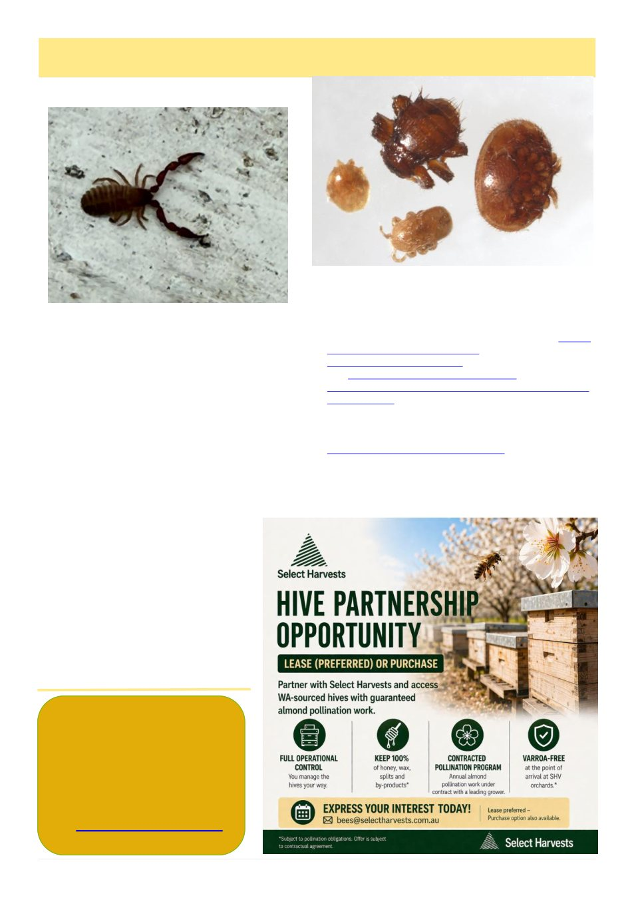

The Australian Bee Journal
welcomes contributions for
inclusion in the journal.
Please send your original
photos, articles, handy hints,
anecdotes, club activities etc
12
Australian Bee Journal
Mystery Mites, cont’d
Various interesting and uncommon little creatures
have been found recently by Victoria‟s beekeepers now
that people are looking more closely at the tiny things
in their hives than ever before. Some are just interest-
ing novelties, but there are still other mites that would
be a five alarm alert if discovered here (Tropilaelaps!)
so if you‟re at all unsure, don‟t hesitate to report it. As
Bruce‟s original article concluded:
If you are like me, it is hard to think straight
when your alarm bells are ringing loudly.
I have a couple of pointers from my experience:
If you have a suspect Varroa test, make a report
through the Exotic Plant Pest Hotline. The best way
to find that is to search for ―plant pest hot-
line Victoria.‖ The first site that comes up is
the national hotline. You want the Victorian
one, which was second on my search results.
The online report is very easy to do.
The ‗Suspected threat‘ list does not in-
clude Varroa, so choose ―Exotic Bee Mite‖.
Suspect Varroa cases are investigated by
the Honeybee Biosecurity staff at Agriculture
Victoria
——————————————————
References
1. Klimov P, O'Connor B, Ochoa R,
Bauchan G, Redford A, Scher J. 2016. Para-
situs [fact sheet]. Bee Mite ID. USDA APHIS PPQ;
University of Michigan. Available from: https://
idtools.org/bee_mite/index.cfm?
packageID=1&entityID=128 [accessed 2026-04-28].
2.https://bie.ala.org.au/species/https://
biodiversity.org.au/afd/taxa/48d71300-d37c-45f1-b071-
4e666a43f7b5. Accessed 2026-04-28
3. Belbin L, Wallis E, Hobern D, Zerger A (2021)
The Atlas of Living Australia: History, current state and
future directions. Biodiversity Data Journal 9: e65023.
https://doi.org/10.3897/BDJ.9.e65023
4. Gibbins, B.L. & R.F. van Toor. 1990. Investigation
of the parasitic status of Melittiphis alvearius (Berlese)
on honeybees, Apis mellifera L., by immunoassay. J.
Apic. Res. 29: 46-52.
(Continued from page 11)
Pseudoscorpion.
Credit: John Edmonds, Geelong
Pollen mite (left), braula fly (top), Varroa (right) and
Tropilaelaps (bottom) – Courtesy of the Animal and
Plant Health Agency (APHA), Crown Copyright